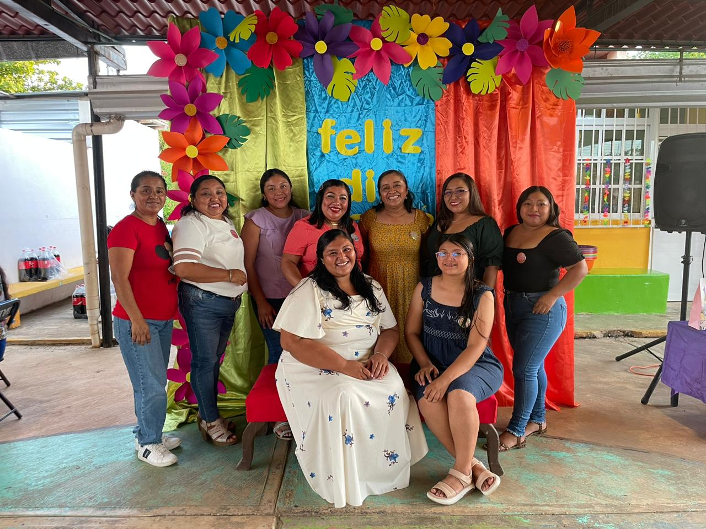
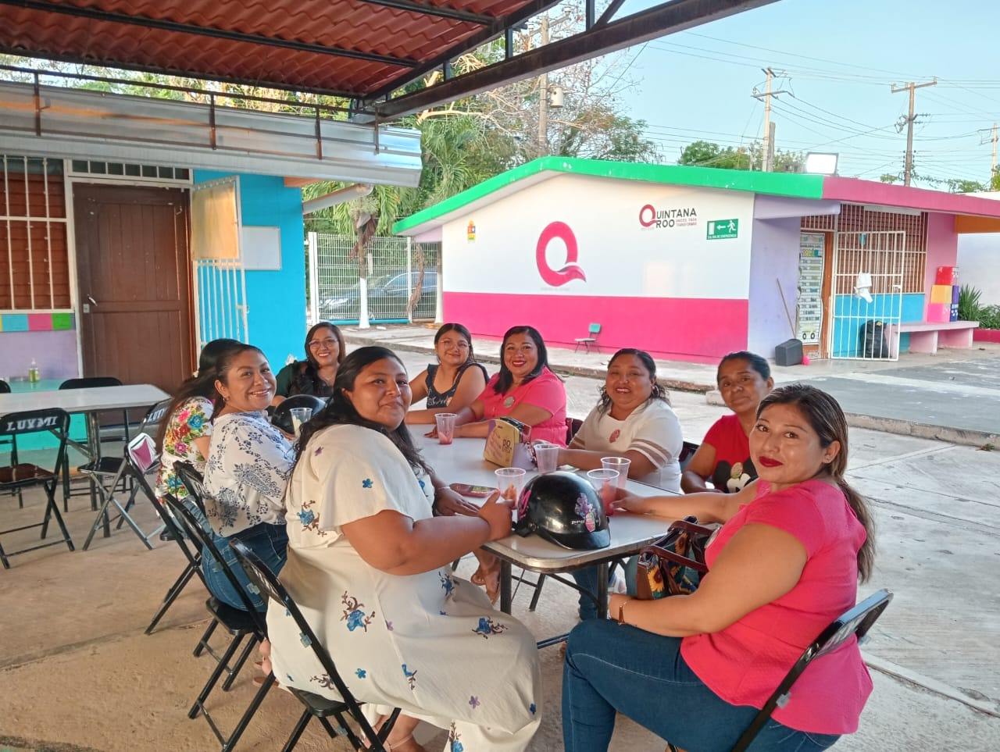
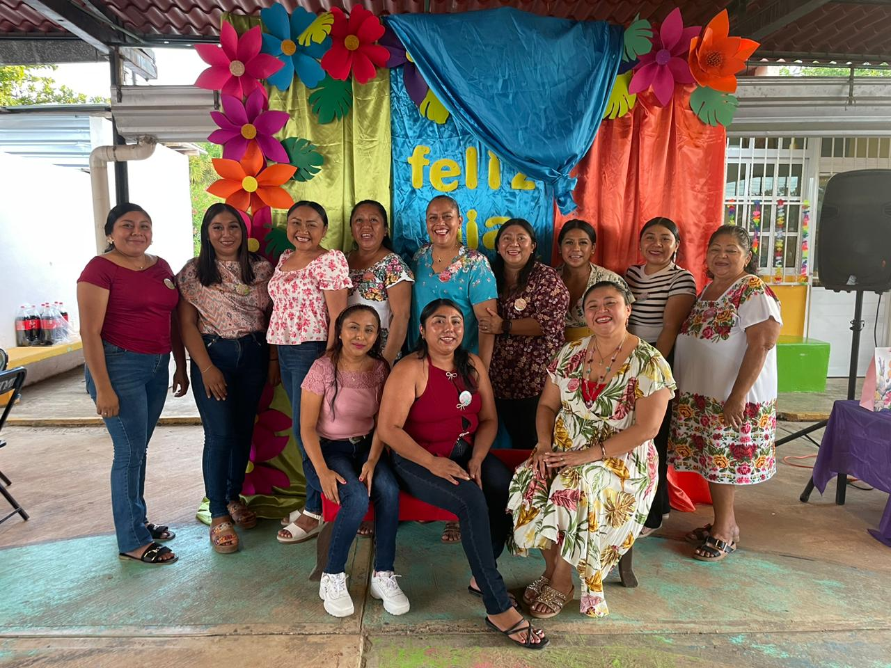

Brindamos un ambiente seguro, divertido y educativo donde los niños desarrollan sus habilidades, creatividad y valores mientras disfrutan cada día de aprendizaje.
Personal capacitado y comprometido con la educación de cada niño.
Espacios seguros, cómodos y adecuados para el aprendizaje.
Juegos, eventos y experiencias que fortalecen el desarrollo integral.



Un lugar donde los niños descubren, crean y desarrollan su potencial.